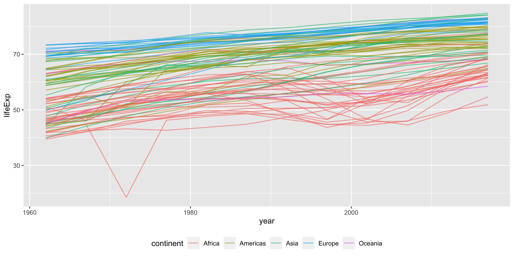
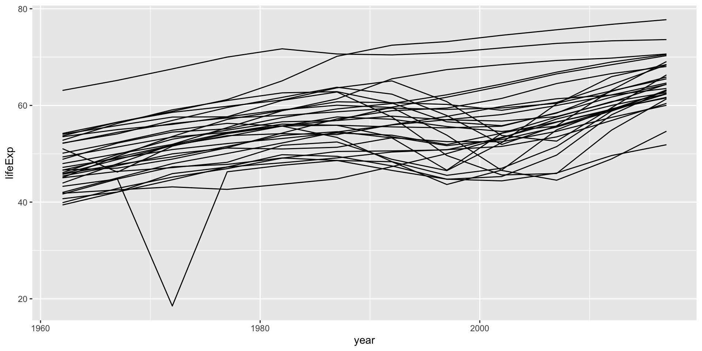
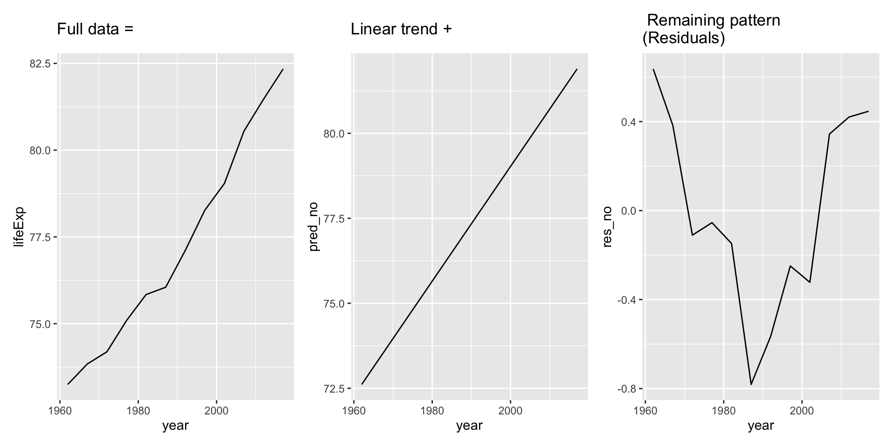
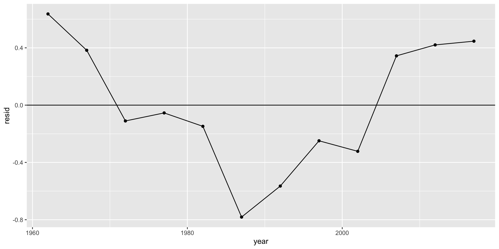
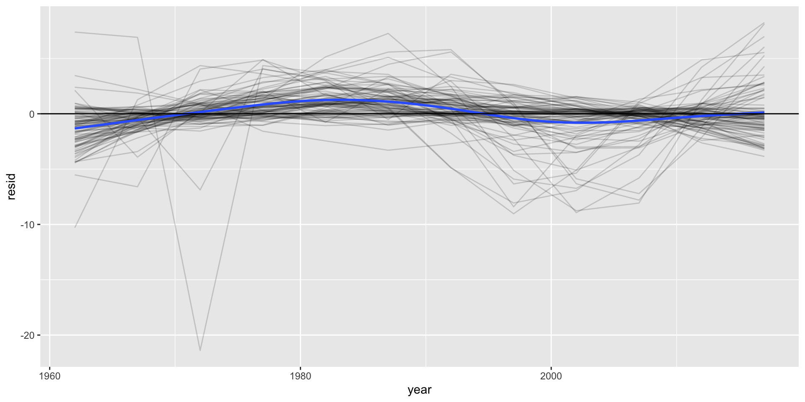
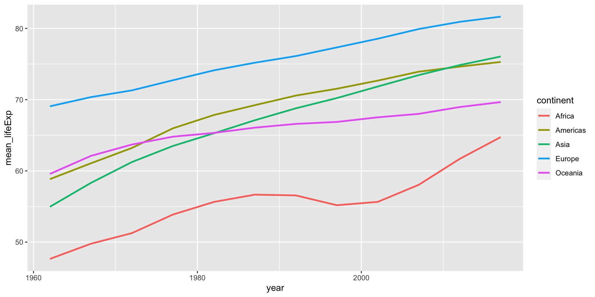
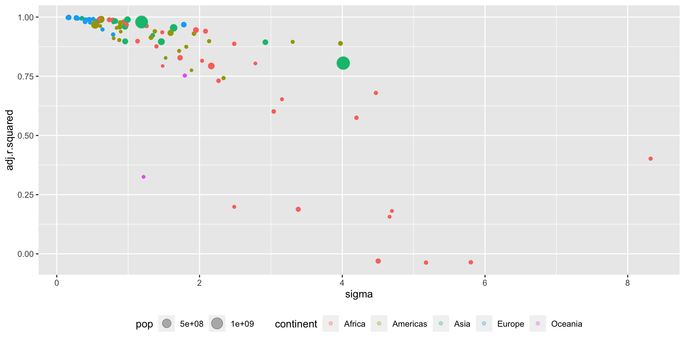
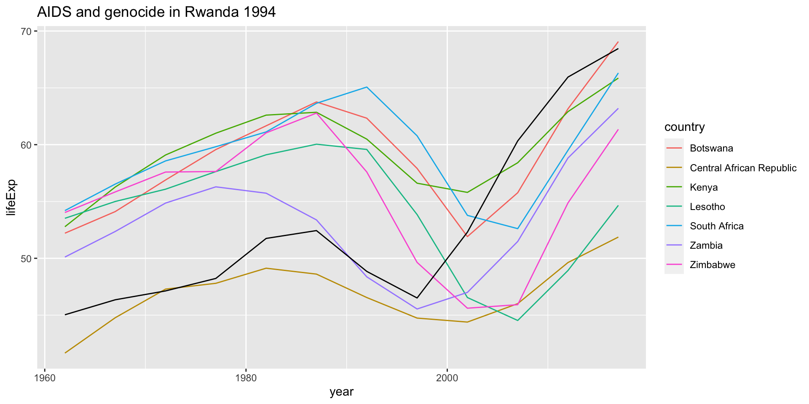

Many models
ag
Code
# create a bib file for the R packages
# used in this document
# Note! Needs to do a touch ag_many_models.bib in terminal before first run
# else stops when bibliography: "ag_many_models.bib" not found in YAML
knitr::write_bib(
c(
"tidyverse",
"modelr",
"nycflights13",
"lubridate",
"tseries",
"patchwork",
"hexbin"
),
file = "ag_many_models.bib"
)Introduction
- Many simple models on complex datasets
- List-columns to store arbitrary data structures in a data frame
- broom package to turn models into tidy data.
- Example gapminder, we will use newgapminder{download =” "newgapminder.csv”} our updated version of the dataset from last assignment
Read in newgapminder
- Our dataset is somewhat smaller than the one in gapminder, but have more updated data
Plotting the data for each country
Plotting the data for each country
Plotting the data for Africa
Plotting the data for Africa
Simple model
- Remove growth
- Problem: 90 different countries
- Start with one: Norway
Code
no <- newgapminder %>% filter(country == "Norway")
no_mod = lm(lifeExp ~ year, data = no)
no1 <- no %>%
ggplot(mapping = aes(x = year, y = lifeExp)) +
geom_line() +
ggtitle("Full data =")
no2 <- no %>%
add_predictions(no_mod, var = "pred_no") %>%
ggplot(mapping = aes(x = year, y = pred_no)) +
geom_line() +
ggtitle("Linear trend + ")
no3 <- no %>%
add_residuals(no_mod, var = "res_no") %>%
ggplot(mapping = aes(x = year, y = res_no)) +
geom_line() +
ggtitle(" Residuals")
no1 + no2 + no3Simple model
Only 89 left to do!
- What can one do?
nest()the data- Common code in a function, map onto each country
- Used to apply function on new variables, now subset of rows (1962 -2017 for 90 different countries)
- Nested data frame:
group_by()first, thennest()
Nested dataframes
- That was easy!
- What’s in by_country?
# A tibble: 90 × 3
# Groups: country, continent [90]
country continent data
<chr> <chr> <list>
1 Argentina Americas <tibble [12 × 4]>
2 Australia Oceania <tibble [12 × 4]>
3 Austria Europe <tibble [12 × 4]>
4 Burundi Africa <tibble [12 × 4]>
5 Belgium Europe <tibble [12 × 4]>
6 Benin Africa <tibble [12 × 4]>
7 Burkina Faso Africa <tibble [12 × 4]>
8 Bangladesh Asia <tibble [12 × 4]>
9 Bahamas Americas <tibble [12 × 4]>
10 Belize Americas <tibble [12 × 4]>
# … with 80 more rowsNested dataframes
- country and continent just two normal character vectors.
- data is something new
- It’s a vector of tibbles
- Is that even permissible after R rules?
- It is. It’s just a vector of lists of vectors of equal length
- Remember, a tibble (and dataframe) is nothing but a list of vectors of equal length
- A list is a permissible vector type, and data contains nothing but lists.
- Data is also of the same length as country and continent.
- Everything is in order.
- Every tibble in data has 12 rows and 4 columns
Nested dataframes
- This kind of structure is quite “new”
- No good tools to inspect it
str()tends to give to much info- The best solution is to inspect a single element with
[[]]
Nested dataframes
# A tibble: 12 × 4
year lifeExp pop gdpPercap
<date> <dbl> <dbl> <dbl>
1 1962-01-01 73.2 3639213 24912.
2 1967-01-01 73.8 3784867 30311.
3 1972-01-01 74.2 3933726 35368.
4 1977-01-01 75.1 4044335 43237.
5 1982-01-01 75.8 4111650 49046.
6 1987-01-01 76.0 4186972 59392.
7 1992-01-01 77.1 4292685 63630.
8 1997-01-01 78.3 4420266 77045.
9 2002-01-01 79.0 4546017 83674.
10 2007-01-01 80.6 4719403 91566.
11 2012-01-01 81.5 5013716 88605.
12 2017-01-01 82.3 5296324 91549.Nested dataframes
- Standard grouped dataframe
- Each row is an observation
- Nested grouped dataframe
- Each row is a group of observations
More on list-columns
- Define a model function
- Want to map this function onto the data for each country
- Store it in
by_countryas the variablemodel
Summary of the model for Norway
Code
Call:
lm(formula = lifeExp ~ year, data = a_df)
Residuals:
Min 1Q Median 3Q Max
-0.78146 -0.26734 -0.08243 0.39243 0.63660
Coefficients:
Estimate Std. Error t value Pr(>|t|)
(Intercept) 7.396e+01 2.033e-01 363.76 < 2e-16 ***
year 4.619e-04 2.138e-05 21.61 1.01e-09 ***
---
Signif. codes: 0 '***' 0.001 '**' 0.01 '*' 0.05 '.' 0.1 ' ' 1
Residual standard error: 0.4668 on 10 degrees of freedom
Multiple R-squared: 0.979, Adjusted R-squared: 0.9769
F-statistic: 467 on 1 and 10 DF, p-value: 1.005e-09Coefficients of the model for Norway
More by_country
by_countrynow contains both data and models for each of the 90 countries- Easy to filter on country or continent
- Will always be kept in sync, just like observations
Adding residuals (and predictions if we want to)
- Then we have added the residuals for each country to
by_country
How to get things out of their nest?
unnest()- Say we want to see the residuals. How will we get them?
# A tibble: 1,080 × 9
# Groups: country, continent [90]
country continent data model year lifeExp pop gdpPe…¹ resid
<chr> <chr> <list> <list> <date> <dbl> <dbl> <dbl> <dbl>
1 Argentina Americas <tibble> <lm> 1962-01-01 64.4 21153042 5711. -0.365
2 Argentina Americas <tibble> <lm> 1967-01-01 64.9 22828872 6255. -1.06
3 Argentina Americas <tibble> <lm> 1972-01-01 66.2 24653172 7369. -0.945
4 Argentina Americas <tibble> <lm> 1977-01-01 68.4 26661397 7744. 0.105
# … with 1,076 more rows, and abbreviated variable name ¹gdpPercapResiduals and the variables for Norway
# A tibble: 12 × 9
# Groups: country, continent [1]
country continent data model year lifeExp pop gdpPercap resid
<chr> <chr> <list> <list> <date> <dbl> <dbl> <dbl> <dbl>
1 Norway Europe <tibble> <lm> 1962-01-01 73.2 3639213 24912. 0.637
2 Norway Europe <tibble> <lm> 1967-01-01 73.8 3784867 30311. 0.383
3 Norway Europe <tibble> <lm> 1972-01-01 74.2 3933726 35368. -0.110
4 Norway Europe <tibble> <lm> 1977-01-01 75.1 4044335 43237. -0.0544
5 Norway Europe <tibble> <lm> 1982-01-01 75.8 4111650 49046. -0.148
# … with 7 more rowsPlot of residuals against year for Norway
Plot of residuals against year for Norway
- Shows clear signs of autocorrelation

Plot residuals for all countries
Plot residuals for all countries
Facetting by continent
Facetting by continent
- Europe is dull, all the action is in Africa.

Mean lifeExp (over country not population) per continent
Mean lifeExp (over country not population) per continent
Model quality
- Filter on a country
- Get model from tibble
- Pick out the lm object and send it to summary
Model quality cont.
Call:
lm(formula = lifeExp ~ year, data = a_df)
Residuals:
Min 1Q Median 3Q Max
-0.78146 -0.26734 -0.08243 0.39243 0.63660
Coefficients:
Estimate Std. Error t value Pr(>|t|)
(Intercept) 7.396e+01 2.033e-01 363.76 < 2e-16 ***
year 4.619e-04 2.138e-05 21.61 1.01e-09 ***
---
Signif. codes: 0 '***' 0.001 '**' 0.01 '*' 0.05 '.' 0.1 ' ' 1
Residual standard error: 0.4668 on 10 degrees of freedom
Multiple R-squared: 0.979, Adjusted R-squared: 0.9769
F-statistic: 467 on 1 and 10 DF, p-value: 1.005e-09- Cumbersome
- Package
broomis your friend
Model quality; broom::glance()
Code
# A tibble: 4 × 12
r.squa…¹ adj.r…² sigma stati…³ p.value df logLik AIC
<dbl> <dbl> <dbl> <dbl> <dbl> <dbl> <dbl> <dbl>
1 0.952 0.948 0.641 200. 6.20e- 8 1 -10.6 27.2
2 0.994 0.994 0.345 1702. 1.68e-12 1 -3.15 12.3
3 0.979 0.977 0.467 467. 1.01e- 9 1 -6.79 19.6
4 0.998 0.998 0.152 4524. 1.28e-14 1 6.64 -7.29
# … with 4 more variables: BIC <dbl>, deviance <dbl>,
# df.residual <int>, nobs <int>, and abbreviated variable
# names ¹r.squared, ²adj.r.squared, ³statisticModel quality; broom::glance()
- Better solution
- Put model summaries in by_country with
mutate(mod_summary = ) - Then
unnest(mod_summary)
- Put model summaries in by_country with
Model quality; broom::glance()
Code
# A tibble: 4 × 17
# Groups: country, continent [4]
country continent data model res r.squ…¹ adj.r…²
<chr> <chr> <list> <list> <list> <dbl> <dbl>
1 Denmark Europe <tibble> <lm> <tibble> 0.952 0.948
2 Finland Europe <tibble> <lm> <tibble> 0.994 0.994
3 Norway Europe <tibble> <lm> <tibble> 0.979 0.977
4 Sweden Europe <tibble> <lm> <tibble> 0.998 0.998
# … with 10 more variables: sigma <dbl>, statistic <dbl>,
# p.value <dbl>, df <dbl>, logLik <dbl>, AIC <dbl>,
# BIC <dbl>, deviance <dbl>, df.residual <int>,
# nobs <int>, and abbreviated variable names ¹r.squared,
# ²adj.r.squaredModel quality
Code
# A tibble: 5 × 2
continent mean_r_adj
<chr> <dbl>
1 Africa 0.655
2 Americas 0.918
3 Asia 0.951
4 Europe 0.982
5 Oceania 0.686- The model seems to have the best fit in Europe
- The worst fit in Africa
Model quality, preserve mod_summary
Code
# A tibble: 90 × 14
# Groups: country, continent [90]
country continent r.squ…¹ adj.r…² sigma stati…³ p.value
<chr> <chr> <dbl> <dbl> <dbl> <dbl> <dbl>
1 Argentina Americas 0.962 0.958 0.882 252. 2.04e- 8
2 Australia Oceania 0.983 0.981 0.589 581. 3.45e-10
3 Austria Europe 0.991 0.990 0.441 1052. 1.83e-11
4 Burundi Africa 0.456 0.402 8.32 8.40 1.59e- 2
# … with 86 more rows, 7 more variables: df <dbl>,
# logLik <dbl>, AIC <dbl>, BIC <dbl>, deviance <dbl>,
# df.residual <int>, nobs <int>, and abbreviated variable
# names ¹r.squared, ²adj.r.squared, ³statisticThe 10 best models
Code
# A tibble: 90 × 14
# Groups: country, continent [90]
country conti…¹ r.squ…² adj.r…³ sigma stati…⁴ p.value
<chr> <chr> <dbl> <dbl> <dbl> <dbl> <dbl>
1 France Europe 0.998 0.998 0.168 6500. 2.11e-15
2 Sweden Europe 0.998 0.998 0.152 4524. 1.28e-14
3 Singapore Asia 0.997 0.997 0.353 3183. 7.43e-14
4 Italy Europe 0.997 0.996 0.274 3076. 8.80e-14
5 Bolivia Americ… 0.996 0.995 0.634 2215. 4.52e-13
6 Belgium Europe 0.995 0.994 0.293 1866. 1.06e-12
7 Finland Europe 0.994 0.994 0.345 1702. 1.68e-12
8 Luxembourg Europe 0.993 0.993 0.370 1486. 3.30e-12
9 Haiti Americ… 0.993 0.993 0.613 1483. 3.33e-12
10 Mauritania Africa 0.993 0.992 0.590 1453. 3.69e-12
# … with 80 more rows, 7 more variables: df <dbl>,
# logLik <dbl>, AIC <dbl>, BIC <dbl>, deviance <dbl>,
# df.residual <int>, nobs <int>, and abbreviated variable
# names ¹continent, ²r.squared, ³adj.r.squared,
# ⁴statisticThe 10 worst models
Code
# A tibble: 90 × 14
# Groups: country, continent [90]
country conti…¹ r.squ…² adj.r…³ sigma stati…⁴ p.value
<chr> <chr> <dbl> <dbl> <dbl> <dbl> <dbl>
1 Zambia Africa 0.0574 -0.0369 5.17 0.609 0.453
2 Zimbabwe Africa 0.0585 -0.0357 5.80 0.621 0.449
3 South Afri… Africa 0.0633 -0.0304 4.50 0.675 0.430
4 Lesotho Africa 0.233 0.157 4.66 3.04 0.112
5 Botswana Africa 0.256 0.181 4.70 3.43 0.0936
6 Kenya Africa 0.262 0.188 3.38 3.55 0.0888
7 Central Af… Africa 0.271 0.199 2.49 3.73 0.0824
8 Fiji Oceania 0.386 0.325 1.22 6.30 0.0309
9 Burundi Africa 0.456 0.402 8.32 8.40 0.0159
10 Malawi Africa 0.613 0.575 4.20 15.9 0.00259
# … with 80 more rows, 7 more variables: df <dbl>,
# logLik <dbl>, AIC <dbl>, BIC <dbl>, deviance <dbl>,
# df.residual <int>, nobs <int>, and abbreviated variable
# names ¹continent, ²r.squared, ³adj.r.squared,
# ⁴statisticPlot adj.r.square and sigma by continent
Plot adj.r.square and sigma by continent
Plot of the worst fits
Code
# Special case Rwanda
rw <- by_country %>% filter(country == "Rwanda") %>% unnest(c(data,mod_summary))
by_country %>%
# unnest data to get to pop
unnest(c(data, mod_summary)) %>%
filter(continent == "Africa") %>%
filter(adj.r.squared < 0.25) %>%
ggplot(mapping = aes(x = year, y = lifeExp, colour = country)) +
geom_line(lwd=1) +
geom_line(data = rw, mapping = aes(x = year, y = lifeExp), colour = "black", lwd=1) +
ggtitle("AIDS and genocide in Rwanda 1994")Plot of the worst fits
Difference 2007 2017
- Compare previous figure with a similar one in r4ds 25.2.4
- What do we see?
- The effect of cheap and available AIDS drugs (from 2000-)
Details list-columns
- data frame: a named list of equal length vectors
- A list is one of Rs vector types
- Always been permissible to have a list of dataframes as a vector in a dataframe
- Not easy in classic R
- New tools make it a lot easier
How classic Rs data.frame() function handles a list of vectors
- Get two columns
- Can force the matter with
I()
Not a problem with tribbles/tibbels
tribble()even makes a list for us- List-columns handy for storing things, but we typically need to “unpack” them before use
- Remember: Most R functions work with vectors and/or dataframes
List-column pipe line
- Create
nest()
summarise() + list()
mutate() + map()
- Make additional list-columns by transforming existing list-columns with
map(),
map2() or
pmap().
- Ex. transforming a list-column of dataframes (with data) to a list-column of models.
List-column pipe line cont.
- Then further transforming a list-column of models to a listcolumn of model summaries
- Finally one simplify list-columns back to vector or dataframes ready to use by regular R functions
mutate()withmap_chr(),map_lgl(),map_int()andmap_dbl()
unnest(c(list-column1, list-column2, etc.)). - Note you now have to usec()even with one list-column.
- Option `drop = TRUE` is now depricated.
- Use `select(-list-column, etc)` before `unnest()` if you want to
drop some columns.List to vector
- Get type and length, always works
- Useful for
filter()
Code
# A tibble: 3 × 3
x type length
<list> <chr> <int>
1 <chr [5]> character 5
2 <int [3]> integer 3
3 <dbl [5]> double 5List to vector
Code
# A tibble: 2 × 3
x type length
<list> <chr> <int>
1 <chr [5]> character 5
2 <dbl [5]> double 5Code
# A tibble: 1 × 3
x type length
<list> <chr> <int>
1 <dbl [5]> double 5List to vector
- Use argument
.null =to provide for missing values
List to vector
unnest()
- Repeats the regular columns once for each element of the list-column.
unnest()
unnest()
# A tibble: 7 × 2
x y
<int> <list>
1 1 <int [4]>
2 2 <int [4]>
3 1 <dbl [1]>
4 2 <dbl [1]>
5 3 <dbl [1]>
6 4 <dbl [1]>
7 5 <dbl [1]>Returns: Error: Incompatible lengths: 2, 4. Run rlang::last_error() to see where the error occurred.
unnest()
# A tibble: 2 × 2
x y
<list> <list>
1 <int [2]> <int [2]>
2 <int [3]> <dbl [1]># A tibble: 5 × 2
x y
<int> <dbl>
1 1 10
2 2 11
3 1 1
4 2 1
5 3 1- Same with list-columns of dataframes. You can unnest multiple list columns, but the data frames in each row must have the same number of rows.
More from broom
- We used
broom::glance(model)above. - We also have:
broom::tidy(model)andbroom:augment(model, data)
Tidy data with broom
- Gives us model coefficients and accompanying statistics
# A tibble: 180 × 8
# Groups: country, continent [90]
country continent model term estim…¹ std.e…² stati…³
<chr> <chr> <list> <chr> <dbl> <dbl> <dbl>
1 Argentina Americas <lm> (Inter… 6.67e+1 3.84e-1 174.
2 Argentina Americas <lm> year 6.41e-4 4.04e-5 15.9
3 Australia Oceania <lm> (Inter… 7.21e+1 2.56e-1 281.
4 Australia Oceania <lm> year 6.50e-4 2.70e-5 24.1
# … with 176 more rows, 1 more variable: p.value <dbl>, and
# abbreviated variable names ¹estimate, ²std.error,
# ³statisticTidy data with broom
- Now we can do things like
Code
by_country <- by_country %>%
mutate(
new18 = map(c(ymd("2018-01-01")), as_tibble_col, column_name = "year"),
pred18 = map2(model, new18, predict.lm)
)
by_country %>%
group_by(continent) %>%
unnest(pred18 ) %>%
summarise(mean_p18 = mean(pred18),
sd_p18 = sd(pred18),
min_p18 = min(pred18),
max_p18 = max(pred18))# A tibble: 5 × 5
continent mean_p18 sd_p18 min_p18 max_p18
<chr> <dbl> <dbl> <dbl> <dbl>
1 Africa 62.5 7.01 49.2 81.1
2 Americas 77.2 4.26 65.1 84.8
3 Asia 77.6 6.23 67.0 85.7
4 Europe 82.2 0.962 80.1 83.9
5 Oceania 70.2 12.4 58.9 83.5broom:augment()
augment()gives us a lot of goodies regarding the model
Code
# A tibble: 1,080 × 10
# Groups: country, continent [90]
country contin…¹ lifeExp year .fitted .resid .hat
<chr> <chr> <dbl> <date> <dbl> <dbl> <dbl>
1 Argentina Americas 64.4 1962-01-01 64.8 -0.365 0.295
2 Argentina Americas 64.9 1967-01-01 66.0 -1.06 0.225
3 Argentina Americas 66.2 1972-01-01 67.1 -0.945 0.169
4 Argentina Americas 68.4 1977-01-01 68.3 0.105 0.127
# … with 1,076 more rows, 3 more variables: .sigma <dbl>,
# .cooksd <dbl>, .std.resid <dbl>, and abbreviated
# variable name ¹continentStill more broom!
- To learn more have a look at the broom package vignettes.
- Find broom under packages and click the link
- Links to the vignettes are at the top of the page
References
Carr, Dan, Nicholas Lewin-Koh, and Martin Maechler. 2021. Hexbin: Hexagonal Binning Routines. https://github.com/edzer/hexbin.
Grolemund, Garrett, and Hadley Wickham. 2011. “Dates and Times Made Easy with lubridate.” Journal of Statistical Software 40 (3): 1–25. https://www.jstatsoft.org/v40/i03/.
Pedersen, Thomas Lin. 2020. Patchwork: The Composer of Plots. https://CRAN.R-project.org/package=patchwork.
Spinu, Vitalie, Garrett Grolemund, and Hadley Wickham. 2021. Lubridate: Make Dealing with Dates a Little Easier. https://CRAN.R-project.org/package=lubridate.
Trapletti, Adrian, and Kurt Hornik. 2022. Tseries: Time Series Analysis and Computational Finance. https://CRAN.R-project.org/package=tseries.
Wickham, Hadley. 2020. Modelr: Modelling Functions That Work with the Pipe. https://CRAN.R-project.org/package=modelr.
———. 2021. Nycflights13: Flights That Departed NYC in 2013. https://github.com/hadley/nycflights13.
———. 2022. Tidyverse: Easily Install and Load the Tidyverse. https://CRAN.R-project.org/package=tidyverse.
Wickham, Hadley, Mara Averick, Jennifer Bryan, Winston Chang, Lucy D’Agostino McGowan, Romain François, Garrett Grolemund, et al. 2019. “Welcome to the tidyverse.” Journal of Open Source Software 4 (43): 1686. https://doi.org/10.21105/joss.01686.